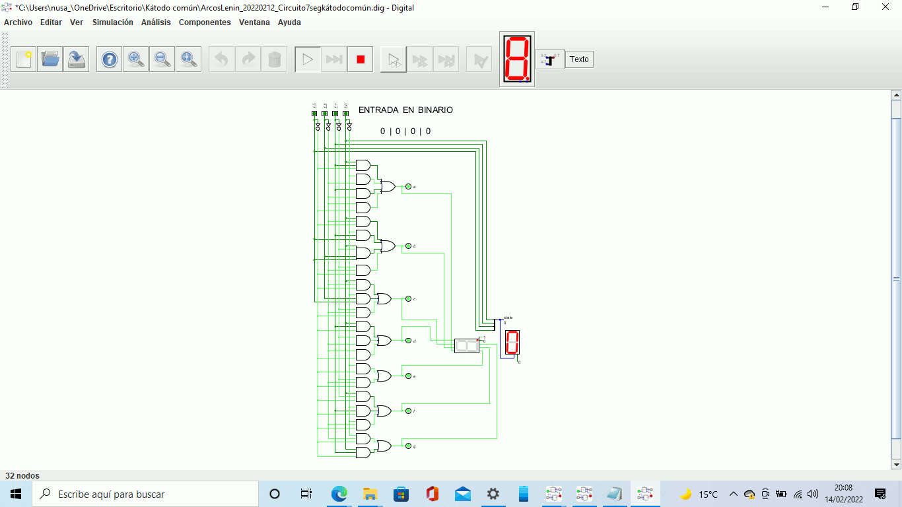

He estado haciendo la tarea de simulaciones lógicas, básicamente estaba más de 8 horas haciendo circuitos y varias veces corriengo que no había igualdad en las salidas.
Mientras tanto estaba también con la tarea de clonado, pero me dio muchos inconvenientes a la hora de la clonación. con el punto 5.
